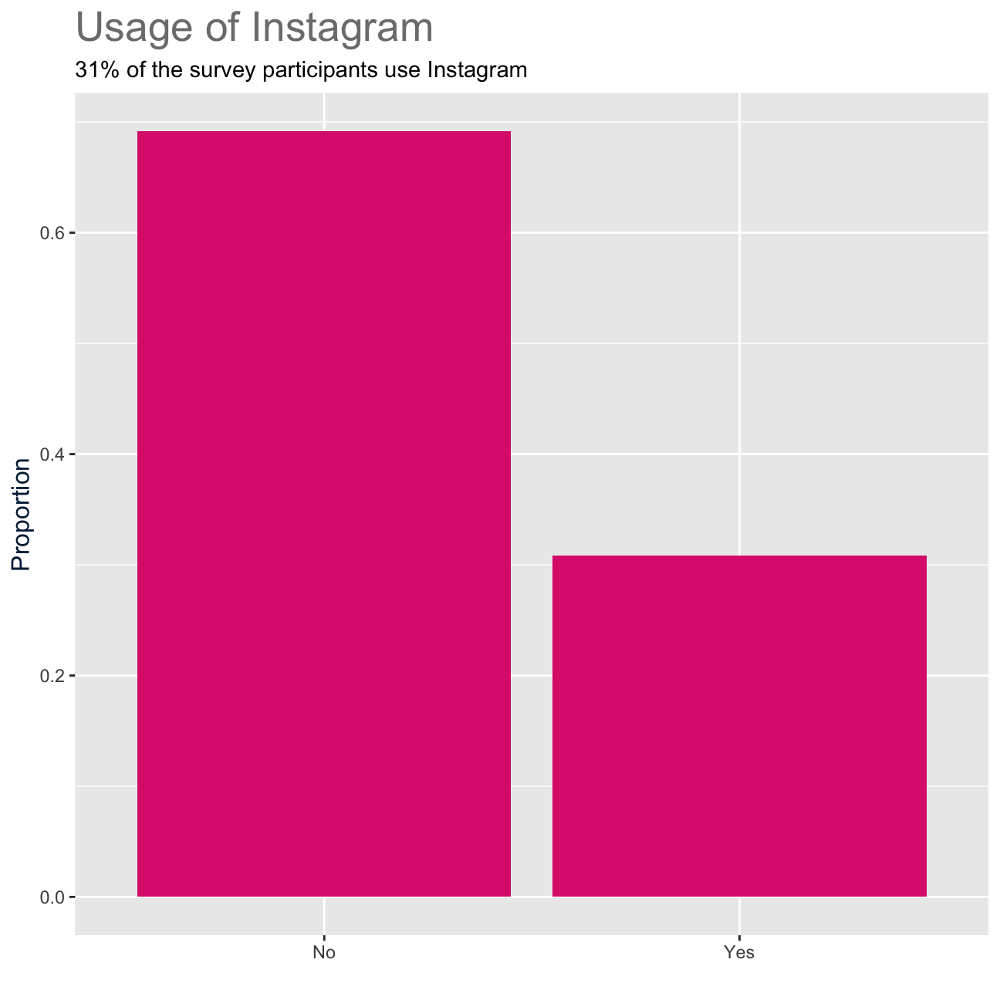

---
categories:
- ''
- ''
date: '2020-09-07'
description: Who uses social media?
draft: false
image: pic08.jpg
keywords: ''
slug: project3
title: "The Social Dilemma"
---


<div id="general-social-survey-gss" class="section level1">
<h1>General Social Survey (GSS)</h1>
<p>The <a href="http://www.gss.norc.org/">General Social Survey (GSS)</a> gathers data on American society in order to monitor and explain trends in attitudes, behaviours, and attributes. Many trends have been tracked for decades, so one can see the evolution of attitudes, etc in American Society.</p>
<pre class="r"><code>gss &lt;- read_csv(here::here(&quot;smallgss2016.csv&quot;), 
                na = c(&quot;&quot;, &quot;Don&#39;t know&quot;,
                       &quot;No answer&quot;, &quot;Not applicable&quot;))</code></pre>
<div id="instagram" class="section level2">
<h2>Instagram</h2>
<pre class="r"><code>#We are calculating the proportion of instagram users

gss_instagram &lt;- gss %&gt;%
 filter(instagrm!=&quot;NA&quot;) %&gt;% #we need to drop the NA values
  group_by(instagrm) %&gt;% 
  summarise(count = n()) %&gt;% 
  mutate(proportion_instagram = count/sum(count)) 
gss_instagram</code></pre>
<pre><code>## # A tibble: 2 x 3
##   instagrm count proportion_instagram
##   &lt;chr&gt;    &lt;int&gt;                &lt;dbl&gt;
## 1 No         949                0.692
## 2 Yes        423                0.308</code></pre>
<pre class="r"><code>gss_plot_instagram &lt;- gss_instagram %&gt;%
 ggplot(aes(
    x = instagrm,
    y = proportion_instagram)) +
  geom_col(fill = &quot;#DD2A7B&quot;)+  #we use the color of instagram
 
#Adding title, subtitle and axis 
labs(title = &quot;Usage of Instagram&quot;,
       subtitles = &quot;31% of the survey participants use Instagram&quot;,
       x=&quot;&quot;,
       y =&quot;Proportion&quot;) +

#Defining the size and color of the titles
    theme(text=, plot.title  = element_text (size=20, colour=&quot;#7D7D7D&quot;),
       axis.title.y= element_text(size=12, colour=&quot;#002144&quot;))
  gss_plot_instagram</code></pre>
<p></p>
</div>
<div id="snapchat" class="section level2">
<h2>Snapchat</h2>
<pre class="r"><code>#We are calculating the proportion of snapcchat users
gss_snapchat &lt;- gss %&gt;%
 filter(snapchat!=&quot;NA&quot;) %&gt;% #we need to drop the NA values
  group_by(snapchat) %&gt;% 
  summarise(count = n()) %&gt;% 
  mutate(proportion_snapchat = count/sum(count)) 
gss_snapchat</code></pre>
<pre><code>## # A tibble: 2 x 3
##   snapchat count proportion_snapchat
##   &lt;chr&gt;    &lt;int&gt;               &lt;dbl&gt;
## 1 No        1061               0.773
## 2 Yes        311               0.227</code></pre>
<pre class="r"><code>gss_plot_snapchat &lt;- gss_snapchat %&gt;%
 ggplot(aes(
    x = snapchat,
    y = proportion_snapchat)) +
  geom_col(fill = &quot;#FEFC00&quot;)+ #we use the color of snapchat

#Adding title, subtitle and axis  
labs(title = &quot;Usage of Snapchat&quot;,
       subtitles = &quot;22% of the survey participants use Snapchat&quot;,
       x=&quot;&quot;,
       y =&quot;Proportion&quot;) +

#Defining the size and color of the titles
  theme(text=, plot.title  = element_text (size=20, colour=&quot;#7D7D7D&quot;),
       axis.title.y= element_text(size=12, colour=&quot;#002144&quot;))
  gss_plot_snapchat</code></pre>
<p>
## Twitter</p>
<pre class="r"><code>#We are calculating the proportion of twitter users
gss_twitter &lt;- gss %&gt;%
 filter(twitter!=&quot;NA&quot;) %&gt;% #we need to drop the NA values
  group_by(twitter) %&gt;% 
  summarise(count = n()) %&gt;% 
  mutate(proportion_twitter = count/sum(count)) 
gss_twitter</code></pre>
<pre><code>## # A tibble: 2 x 3
##   twitter count proportion_twitter
##   &lt;chr&gt;   &lt;int&gt;              &lt;dbl&gt;
## 1 No       1117              0.814
## 2 Yes       255              0.186</code></pre>
<pre class="r"><code>gss_plot_twitter &lt;- gss_twitter %&gt;%
 ggplot(aes(
    x = twitter,
    y = proportion_twitter)) +
  geom_col(fill = &quot;#36D8FF&quot;)+ #we use the color of Twitter
  
#Adding title, subtitle and axis
labs(title = &quot;Usage of Twitter&quot;,
       subtitle = &quot;19% of the survey participants use Twitter&quot;,
       x=&quot;&quot;,
       y =&quot;Proportion&quot;)+
  
#Defining the size and color of the titles
  theme(text=, 
        plot.title  = element_text (size=20, colour=&quot;#7D7D7D&quot;),
        axis.title.y= element_text(size=12, colour=&quot;#002144&quot;))
gss_plot_twitter</code></pre>
<p></p>
</div>
<div id="twitter-and-instagram-by-gender" class="section level2">
<h2>Twitter and Instagram by gender</h2>
<pre class="r"><code>gss_twitter_insta &lt;- gss %&gt;%
  # We create a new variable for twitter_insta
  mutate(twitter_insta = case_when(
    twitter == &quot;Yes&quot; &amp; instagrm == &quot;Yes&quot; ~ &quot;Yes&quot;, #Users need to use both Twitter and Insta to be recorded as a Yes
    twitter == &quot;No&quot; &amp; instagrm == &quot;No&quot; ~ &quot;No&quot;)) 
  
# calculate the proportion of users
gss_proportion &lt;- gss_twitter_insta %&gt;%
  filter(!is.na(twitter_insta)) %&gt;% 
  group_by(twitter_insta) %&gt;% 
  summarise(count = n()) %&gt;% 
  mutate(proportion = count/sum(count)) 
gss_proportion</code></pre>
<pre><code>## # A tibble: 2 x 3
##   twitter_insta count proportion
##   &lt;chr&gt;         &lt;int&gt;      &lt;dbl&gt;
## 1 No              851      0.844
## 2 Yes             157      0.156</code></pre>
<pre class="r"><code>twitter_insta_ci &lt;- gss_twitter_insta %&gt;%
  group_by(sex) %&gt;%
  # using the CI formula
  summarize(mean_twitter_insta = prop(twitter_insta == &quot;Yes&quot;), #We just want to include those who previously answered Yes
            count = n(),
            standard_error = sqrt((mean_twitter_insta * (1 - mean_twitter_insta)) / count),
            t_critical = qt(0.975, count-1),
            margin_of_error = t_critical*standard_error,
            lower_bound = mean_twitter_insta - margin_of_error,
            upper_bound = mean_twitter_insta + margin_of_error)
twitter_insta_ci</code></pre>
<pre><code>## # A tibble: 2 x 8
##   sex   mean_twitter_in… count standard_error t_critical margin_of_error
##   &lt;chr&gt;            &lt;dbl&gt; &lt;int&gt;          &lt;dbl&gt;      &lt;dbl&gt;           &lt;dbl&gt;
## 1 Fema…            0.151  1591        0.00899       1.96          0.0176
## 2 Male             0.161  1276        0.0103        1.96          0.0202
## # … with 2 more variables: lower_bound &lt;dbl&gt;, upper_bound &lt;dbl&gt;</code></pre>
<pre class="r"><code>gss_plot_twitter_insta &lt;- twitter_insta_ci %&gt;%
   ggplot(aes(
    x = sex,
    y = mean_twitter_insta))+

#Adding  errorbar to  visualise the confidence intervals for both gender
  geom_errorbar(aes(ymin=lower_bound, 
                    ymax=upper_bound, color=sex), 
                    width=0.1,
                    size=1)+
#Size  of  the  point
 geom_point(size = 5, aes(color = sex))+
  
#Adding title and axis
  labs(title = &quot;Men are more likely to use Twitter and Instagram&quot;,
       x=&quot;&quot;,
       y =&quot;Proportion using either Twitter or Instagram&quot;)+

#Defining the size and color of the titles
    theme(text=, plot.title  = element_text (size=20, colour=&quot;#7D7D7D&quot;),
       axis.title.y= element_text(size=12, colour=&quot;#002144&quot;))
  gss_plot_twitter_insta</code></pre>
<p></p>
</div>
</div>
